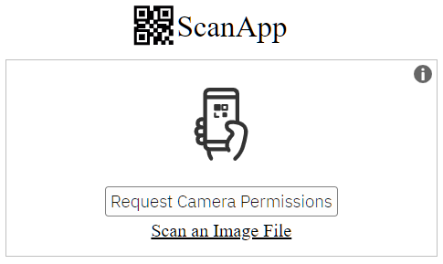
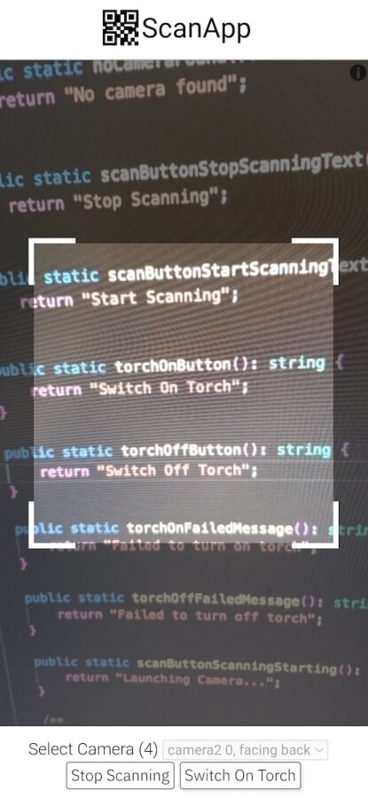

22 Mar 2023 by Myrtle Bautista
Barcodes and Quick Response (QR) codes have changed the retail industry through the years. Barcode technology reduced the need for manual data entry to streamline the checkout process. This innovation also made it easier for businesses to better manage their products and services to customers, a benefit that today's retail industry still enjoys.
04 Mar 2023 by Minhaz
The open source project -
mebjas/html5-qrcode is a fairly used library for implementing QR Code or barcode scanner in a web application. Several developers have been using it under webview for android projects as well. In this article, I want to share my humble story and make a case of why you should help support this project if you can by sponsoring the developers or in other ways possible!
01 Nov 2022 by Mohsina

In this article, I'll share how to use different scan types - camera based and file based, depending upon the scenario.
30 Oct 2022 by Minhaz

mebjas/html5-qrcode is a fairly used open source library for implementing QR Code or barcode scanner in a web application. There has been ask supporting torch or flash feature with the scanner. This feature is usually very well supported on native scanner apps that are available on Android or IOS. In this article I'll share how to add torch support with both end to end library (Html5QrcodeScanner) as well as the low level library (Html5Qrcode).
09 Jan 2022 by Minhaz
mebjas/html5-qrcode is a fairly used open source library for implementing QR Code or barcode scanner in a web application. Several developers have been using it under webview for android projects as well. This article explains how to set the dimensions of QR box dynamically based on video width or height